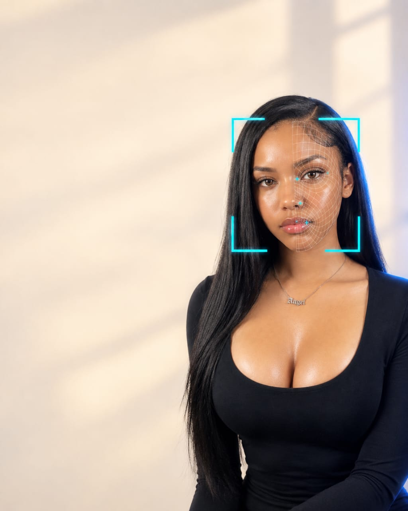

Business and partnerships
Discuss onboarding, verification operations, or a customer journey that needs a clearer signal.
Identity infrastructure
Verid is the identity verification layer for businesses that can't afford to get 'is this really them?' wrong — or slow. One API call. Under two seconds.

Platform
Verid combines document checks, face verification, and human-readable decisions in one continuous flow so teams can move faster without sacrificing trust.
Why teams choose Verid
Instead of manual review bottlenecks, Verid turns verification into a clean automated signal your team can trust and your customer can move through without friction.
Solutions
Whether the customer is opening an account, signing up for a wallet, or proving eligibility for a service, Verid makes identity checks feel designed for real life, not a manual review queue.
Explore solutionsTalk to Verid
Tell us what you are building, where verification slows you down, or how you want to explore the platform. We will point you to the right next step.